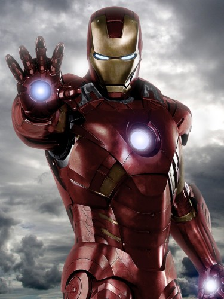

Superhero trivia
Who makes a superhero?
Superhero is a person who does heroic deeds and has the ability to do them in a way that a normal person couldn’t.
So in order to be a superhero, you need a power that is more exceptional than any power a normal human being could possess, and you need to use that power to accomplish good deeds.
Otherwise, a policeman or a fireman could be considered a superhero.
For instance, a good guy fighting a bad guy could be just a regular police story or detective story or human-interest story.
But if it’s a good guy with a superpower who is fighting a bad guy, it becomes a superhero story.
If the good guy is doing something that a normal human being couldn’t do, couldn’t accomplish, then I assume he becomes a superhero.
Article on superheroes at OUP blog
Top superheroes
- Superman
- Batman
- Captain AMerica
- Hulk
My favorite superhero

Iron Man
Iron Man is a superhero appearing in American comic books published by Marvel Comics.
The character was co-created by writer and editor Stan Lee, developed by scripter Larry Lieber, and designed by artists Don Heck and Jack Kirby.
The character made his first appearance in Tales of Suspense #39 (cover dated March 1963), and received his own title in Iron Man #1 (May 1968).
Also in 1963, the character founded the Avengers alongside Thor, Ant-Man, Wasp and the Hulk.
Anchor to "What makes a superhero?"